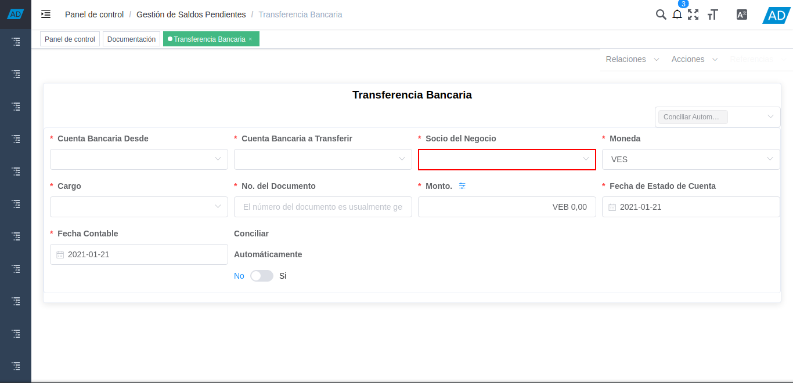
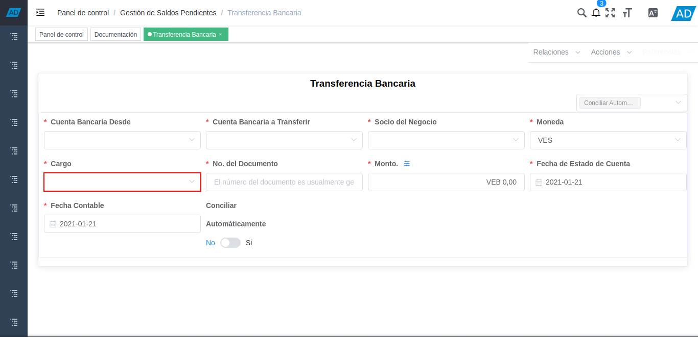
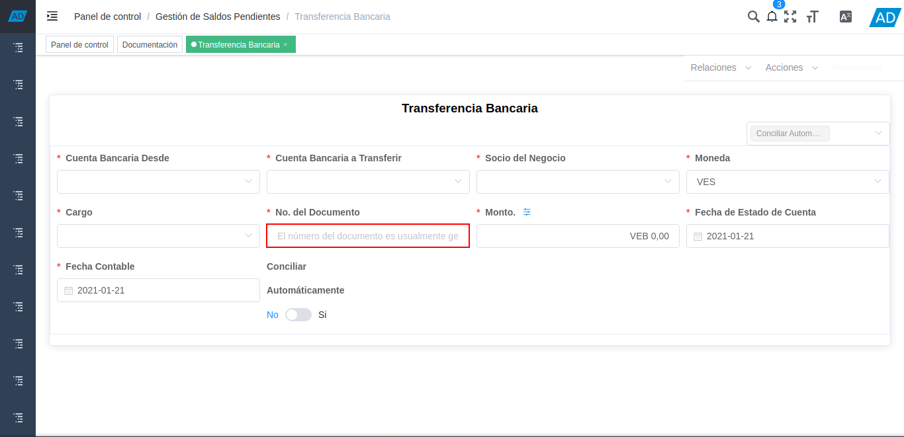
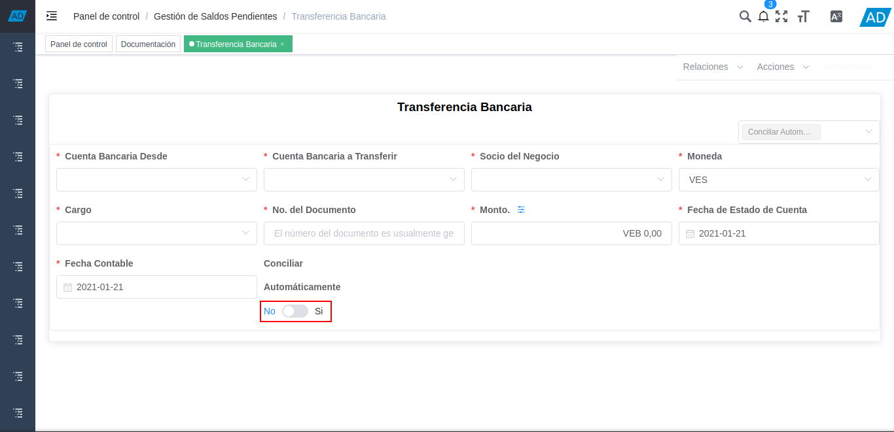
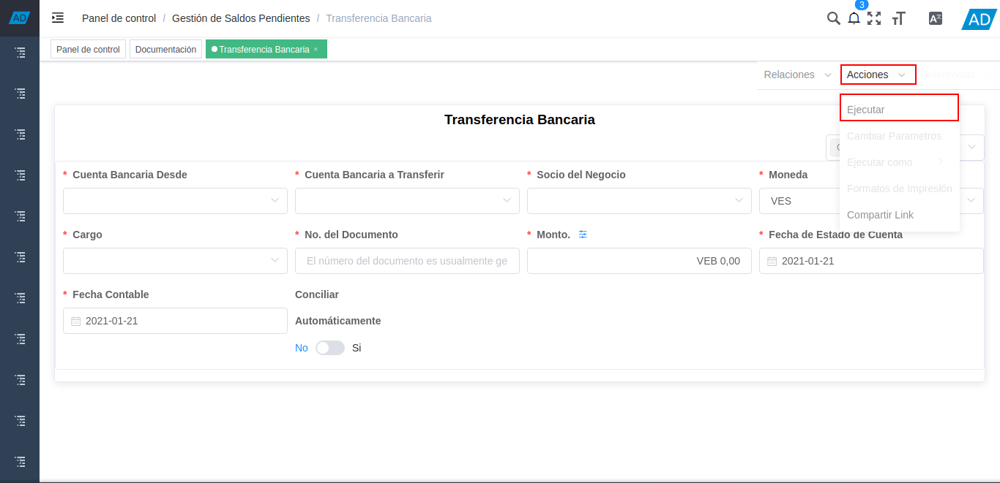

5.1.1. Registro de Transferencia Bancaria¶
Para realizar una transferencia bancaria en ADempiere deben seguir los siguientes pasos:
Ubique y seleccione en el menú de ADempiere, la carpeta “Gestión de Saldos Pendientes”, luego seleccione el proceso “Transferencia Bancaria”.

Imagen 1. Menú de ADempiere
Podrá visualizar la ventana del proceso “Transferencia Bancaria” y proceder al llenado de los campos correspondientes.

Imagen 2. Ventana Transferencia Bancaria
Seleccione en el campo “Cuenta Bancaria Desde”, la cuenta a debitar el monto de la transferencia realizada.

Imagen 3. Campo Cuenta Bancaria Desde
Note
La cuenta a debitar desde es la cuenta bancaria de donde saldrá la transferencia.
Seleccione en el campo “Cuenta Bancaria a Transferir”, la cuenta a acreditar el monto de la transferencia realizada.

Imagen 4. Campo Cuenta Bancaria a Transferir
Note
La cuenta bancaria a transferir, es la cuenta en donde caerá la transferencia.
Seleccione en el campo “Socio del Negocio”, el socio del negocio titular de la cuenta seleccionada.

Imagen 5. Campo Socio del Negocio
Seleccione en el campo “Moneda”, la moneda en la cual fue realizada la transferencia.

Imagen 6. Campo Moneda
Seleccione en el campo “Cargo”, el cargo correspondiente a la transferencia entre cuentas que se está realizando.

Imagen 7. Campo Cargo
Note
El cargo a colocar en la transferencia bancaria depenrá de que tipo de transferencia se este realizando.
Introduzca en el campo “No. del Documento”, la referencia correspondiente a la transferencia bancaria realizada.

Imagen 8. Campo No. del Documento
Note
El número de documento a colocar en este campo es el número de la transferencia bancaria realizada del banco.
Introduzca en el campo “Monto”, el monto total de la transferencia bancaria realizada.

Imagen 9. Campo Monto
Introduzca en el campo “Fecha de Estado de Cuenta”, la fecha de la transferencia bancaria realizada.

Imagen 10. Campo Fecha de Estado de Cuenta
Introduzca en el campo “Fecha Contable”, la fecha de la transferencia bancaria realizada.

Imagen 11. Campo Fecha Contable
Si desea que los pagos/cobros que se generen de esta transferencia bancarias se concilien de una vez puede tildar la opción “Conciliar Automáticamente”, si no tilda esta opción los pagos/cobros no se conciliaran y deberán ser conciliados a través del proceso “Conciliación Automática”.

Imagen 12. Campo Conciliar Automáticamente
Para completar el proceso, se debe posicionar sobre el campo “Acciones” y luego se debe posicionar sobre la opción “Ejecutar”, para generar en ADempiere la transferencia entre cuentas bancarias.

Imagen 13. Campo Acciones y Opción Ejecutar